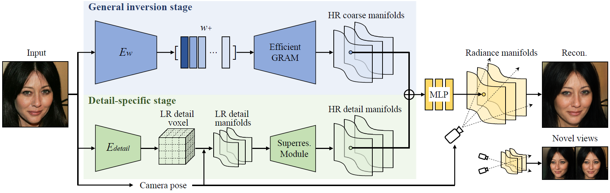

Learning Detailed Radiance Manifolds for High-Fidelity and 3D-Consistent Portrait Synthesis from Monocular Image
Accepted by CVPR 2023

Abstract
A key challenge for novel view synthesis of monocular portrait images is 3D consistency under continuous pose variations. Most existing methods rely on 2D generative models which often leads to obvious 3D inconsistency artifacts. We present a 3D-consistent novel view synthesis approach for monocular portrait images based on a recent proposed 3D-aware GAN, namely Generative Radiance Manifolds (GRAM), which has shown strong 3D consistency at multiview image generation of virtual subjects via the radiance manifolds representation. However, simply learning an encoder to map a real image into the latent space of GRAM can only reconstruct coarse radiance manifolds without faithful fine details, while improving the reconstruction fidelity via instance-specific optimization is time-consuming. We introduce a novel detail manifolds reconstructor to learn 3D-consistent fine details on the radiance manifolds from monocular images, and combine them with the coarse radiance manifolds for high-fidelity reconstruction. The 3D priors derived from the coarse radiance manifolds are used to regulate the learned details to ensure reasonable synthesized results at novel views. Trained on in-the-wild 2D images, our method achieves high-fidelity and 3D-consistent portrait synthesis largely outperforming the prior art.
Video
Overview

Overview of our method. An input portrait image goes through two stages to obtain the final radiance manifolds for novel view synthesis. The first general inversion stage maps the input image to the latent space of a pre-trained efficient GRAM to obtain coarse radiance manifolds. The second detail-specific stage then extracts detail feature manifolds from the input image and combines them with the coarse results for high-fidelity image synthesis. See the paper for more details.
Novel View Synthesis
Novel view synthesis on CelebA-HQ. Our method can generate novel views of a portrait image with high-fidelity and strong 3D-consistency via single forward pass.
Comparison with existing face editing methods. Our method faithfully reconstructs the given image and achieves better 3D-consistency under pose variations.
Dolly Zoom Effect
Our method achieves dolly zoom effect of a portrait image by explicitly adjusting the camera position and fov, thanks to the underlying 3D representation.
3D-Consistent Editing
Our method can also be applied to 3D-consistent interactive portrait editing due to its ability to preserve fine image details.
Citation
@article{deng2022learning,
title={Learning Detailed Radiance Manifolds for High-Fidelity and 3D-Consistent Portrait Synthesis from Monocular Image},
author={Deng, Yu and Wang, Baoyuan and Shum, Heung-Yeung},
journal={arXiv preprint arXiv:2211.13901},
year={2022}
}
Acknowledgements
We thank Xingyu Chen for the discussion to improve the paper.
The website template was adapted from GRAM.